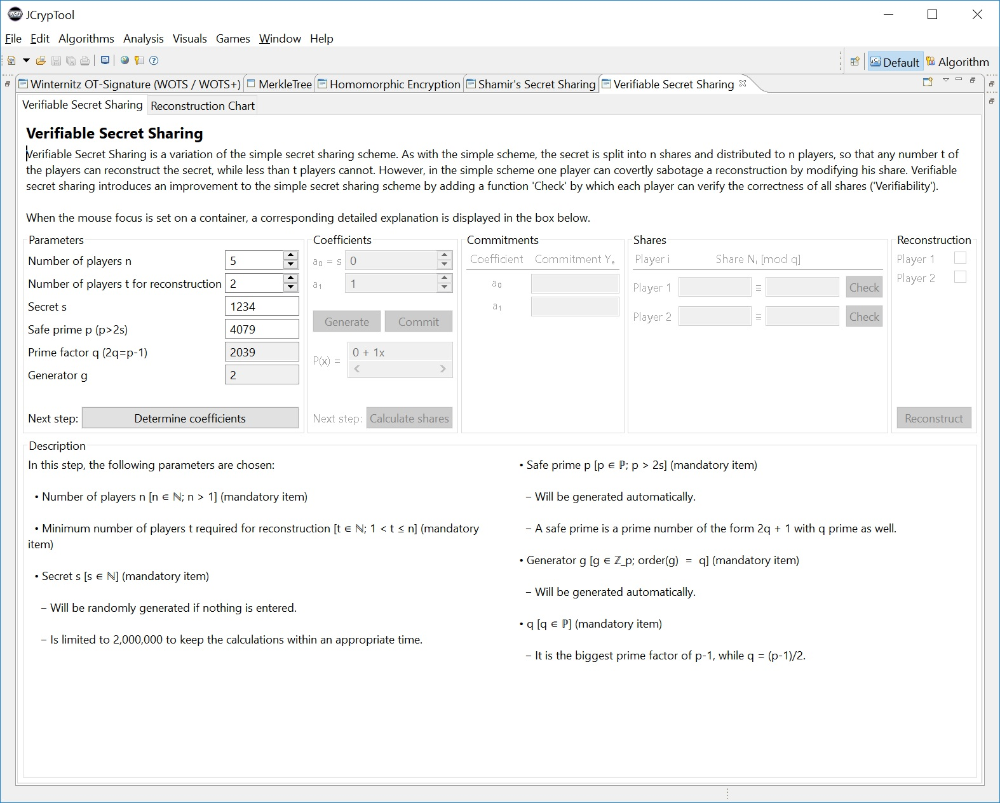
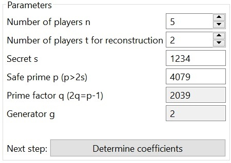
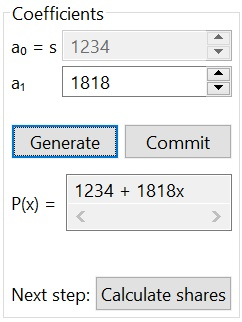
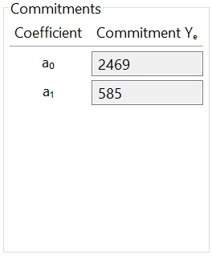
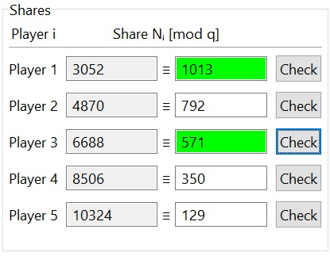
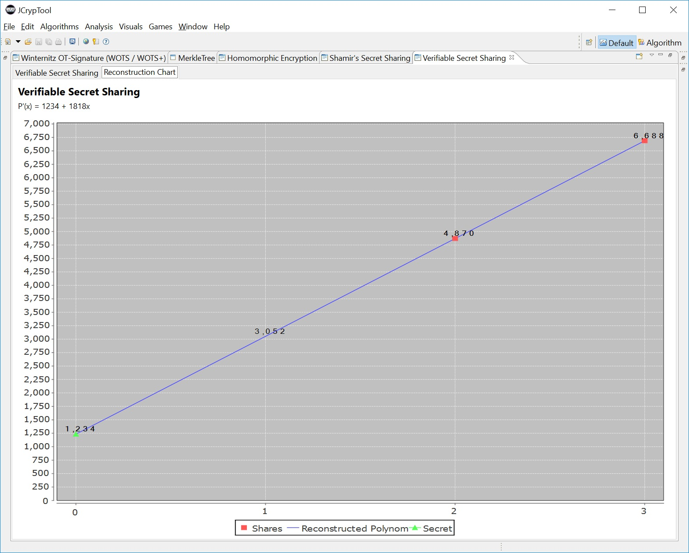

The Verifiable Secret Sharing algorithm has been developed by Paul Feldman in 1987 and is based on the Shamir's Secret Sharing algorithm from Adi Shamir from 1979. With this algorithm it is possible to divide a secret into parts and distribute it to multiple persons. For retrieving the secret, just a few of this persons is necessary.
The following explains how the Verifiable Secret Sharing plugin works.
The plugin can be started in the menu bar at Visualization or at the view Algorithms at the tab Visualization.

The plug-in is splitted into 4 parts: header, input mask, description and the tab reconstruction chart.
The Header shows a short description of the plug-in.
The input mask contains the boxes to set the parameters and all other computations of the Verifiable Secret Sharing-algorithm. The results are also shown there.
At the bottom of the screen you can find the area description where additional information for the current step is shown.
Additionally there is a tab Reconstruction Chart where the reconstruction is visualized.
The parameters, which are necessary for the algorithm, are set in the box Parameters.
At first there will be chosen the number persons n, which are concerned to get a share of the secret. Furthermore you have to decide about a number persons t how many persons will be needed to reconstruct it. The number of persons t may not be bigger than persons n. Both numbers have to be at least 2, as far as Verifiable Secret Sharing doesn't make sense for less involved people than 2.
The next parameter to choose is the secret s. After that, the module p, which have to be a safe prime, is calculated automatically. As far as the calculation of safe primes is quite complex, it is highly recommended to use the given value. If you don't like to use the proposed safe prime, you still have the possibility to enter any other safe prime as long it is at least twice as big than the secret s. The last parameter is the generator g and is calculated automatically and cannot be changed. The generator g will be calculated automatically like p. The generator g is an element of the field Z_p* and has the order q.

If all parameters are set correctly, it is possible to go on to the next step with a click on Determine coefficients.
The coefficients for the polynomial are set in this box. They can be generated by JCrypTool or chosen by yourself. The coefficients have to be natural numbers smaller than the module p The first coefficient is fixed, and is the secret s which already has been chosen.

In this box you can also find the button Commit. The computation of the commitments is necessary for the verification of the shares afterwards. The commitments are shown in a seperate box after they are calculated.

The computation of the commitments is optional, as far as they are just needed to check the shares afterwards. They are not needed for the reconstruction of the secret. If you want to do the reconstruction without checking the shares, you don't need the commitments.
Go on to the next step for calculating the shares with a click on Calculate shares
The last step is splitted up in 2 boxes: Shares and Reconstruction
The box Shares shows the shares and the shares mod q. For checking the shares, a click on the respective Check-button is necessary. Keep in mind that the check won't be succesful if you didn't have done the calculating of the commitments first. To show the sense of checking the shares it is possible to change one or more shares. The change of one or more shares has 2 consequences. At first the check for the modified share won't be successful anymore. And second the reconstruct won't return the primordial secret.

The reconstruction can be done in the box Reconstruction. Before you can start with a click on reconstruct it is essential to choose the shares you want to use. It is irrelevant which ones you take as long as equal or more than the minimum. The minimum is the number of persons t you have chosen in the beginning.
